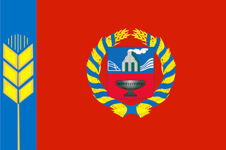
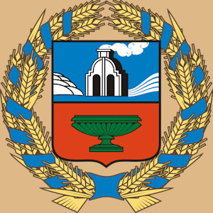

Флаг Алтайского края

Герб Алтайского края
ОБЩИЕ СВЕДЕНИЯ
| Дата образования |
28 сентября 1937 |
| Площадь |
167 996 км² (22-е место) |
| Часовой пояс |
MSK+4 (UTC+7) |
| Крупнейшие города |
Барнаул, Бийск, Рубцовск |
ФАКТЫ
- В Алтайском крае берет свое начало самая протяженная река России – Обь. Она образуется от слияния Бии и Катуни.
- В Алтайском крае насчитывается более 17 тысяч рек и около 13 тысяч озер.
- В Алтайском крае изобрели и начали массово выпускать один из самых любимых сыров СССР – "Советский".
- Город Бийск – один из шести городов России, построенных по личному указу Петра Великого.